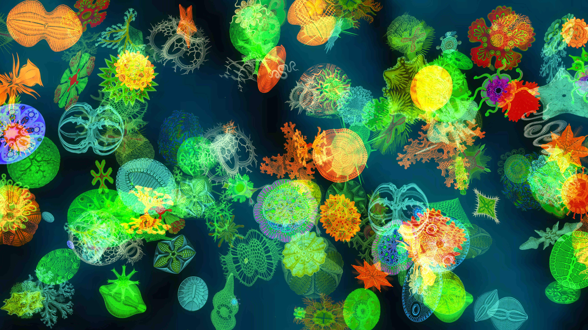

Exemples Visuels


Exploration des cycles mathématiques et informatiques dans la création visuelle
Voir le journal de bordCe projet explore l'utilisation des cycles et des boucles de rétroaction en conception générative, notamment à travers le modèle de réaction-diffusion appliqué à l’architecture.
Le modèle de réaction-diffusion est utilisé pour générer des motifs naturels. En architecture, il permet d’optimiser la lumière, la ventilation et l’esthétique des structures.
Exemple : Simuler une façade perforée en fonction des paramètres de diffusion et réaction.
Le cycle est central dans la conception générative :
Les algorithmes génétiques sont basés sur des cycles d'évolution (mutation, sélection, croisement), qui s'inspirent de l'évolution biologique.
Cela utilise des notions de graphes (optimisation de chemins), d'équations différentielles (pour la stabilité structurelle) et de mécanique des matériaux.
Exemple : Optimisation de structures légères et résistantes (comme celles utilisées en impression 3D).
Une structure tensegrity simple est constituée de nœuds connectés par des barres rigides et des câbles en tension.
üîπ Approche math√©matique :
Les forces internes sont modélisées sous forme de matrice.
La rigidité du système est exprimée par une matrice de raideur K.
Les déplacements des nœuds sont obtenus en résolvant une équation matricielle.
La matrice de rigidité K d'un système est définie par : K ⋅ U = F
où :
K est la matrice de raideur (qui représente la connexion entre les nœuds).
U est le vecteur des déplacements des nœuds.
F est le vecteur des forces appliquées.
GAN (Generative Adversarial Network) : Utilisé pour générer des formes complexes, des textures et des designs innovants.
voir le wikipedia de GANVAE (Variational AutoEncoder) : Modèle probabiliste pour générer des variations continues d'un design.
voir le wikipedia de VAE